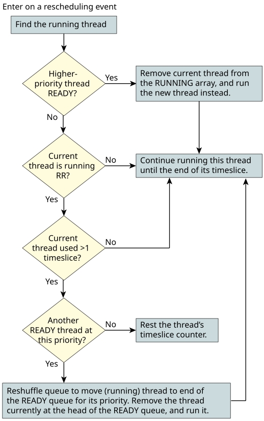

Let's summarize the scheduling rules (for a single CPU), in order of importance.
The following flowchart shows the decisions that the kernel makes:

For a multiple-CPU system, the rules are the same, except that multiple CPUs can run multiple threads concurrently. The order in which the threads run (i.e., which threads get to run on the CPUs) is determined in the exact same way as with a single CPU: the highest-priority READY thread will run on a CPU. For lower-priority or longer-waiting threads, the kernel has some flexibility as to when to schedule them to avoid inefficiency in the use of the cache. For more information about SMP, see the Multicore Processing chapter of the QNX OS Programmer's Guide.